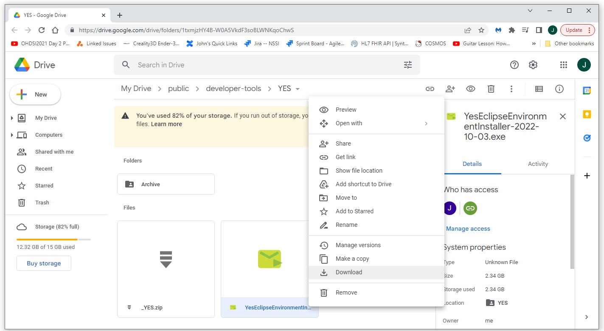

_YES: Yaorma Eclipse Setup - Install a Fully Automated, Fully Featured Eclipse Environment
The fully featured Eclipse environment can be installed by downloading and running the YesEclipseEnvironmentInstaller.exec.
A fully automated installer of an integrated Eclipse environment is provided here. This installer was created using NSISBI (Nullsoft Scriptable Install System BI version). More information on NSIS is available at https://nsis.sourceforge.io/Main_Page. Some individual example scripts are available at https://github.com/NACHC-CAD/nsis-examples. The script used to create the installer is open source and available in git hub at https://github.com/NACHC-CAD/nsis-yes-install. This install is for Windows.The installer includes all of the following.
-
Software
- A complete Git client
- A complete Maven(MVN) install
- Several JDK/JRE instances
- Batch files to help with common everyday tasks
- A complete Wildfly (JBoss) installation
- Wildfly/Eclipse integration to enable stepping through server side code
- An example standalone application
- An example deployable web application
- Lobok/Eclipse integration
-
Configuration: This installation will create/modify the following environment variables
- The path environment variable will be updated to include the new Git, Maven, Java, and .bat file installs
- The JAVA_HOME environment variable will be set to point to the newly installed version of Java
- A JAVA_VERSION environment variable will be set to enable cmd line switching of the current Java version
- Git will be configured to use the newly installed certificate for Git
- A logical link will be created as the default location of the _YES install if the default location is not used. (having all installations have the same root directory enables automation of some functionality)
Features of the _YES Eclipse Environment
The Installer
The Installer can be downloaded from Google Drive here.
After downloading, run the .exe file as administrator. The default instalation location is C:\_YES. If a different location is selected, a logical link at C:\_YES is created that points to the installed version. For the installation described here, the installation is to D:\_YES and the logical link is created. Note that the .zip file is also available if a manual installation is preferred. As the installer runs, you should see output indicating what files are being installed. When the installation has completed, you should see something like what is shown below.

What's Installed: The _YES directory
The _YES directory contains all of the tools required for complete full stack Java development. This includes the following directories.
-
downloads
This folder contains the source files for many of the components used to create the complete _YES package. -
eclipse
The Eclipse folder contains a fully featured install of Eclipse. -
servers
This folder contains full installs of Tomcat and Wildfly -
tools
This folder contains all of the tools required for the _YES Environment including- bat: Some useful batch files for day-to-day tasks
- git: A full install of a Git client
- java: several installs of JDK/JRE
- mvn: A complete Maven (MVN) install
- workspace: A default workspace that includes Wildfly server integration and some example applications
Start Developing Using _YES
To get started navigate to the C:\_YES folder and double click on the eclipse.exe shortcut. When Eclipse opens up, you should see two applications loaded into the default environment. You can run the HelloWorld class to make sure everything is working.You can also deploy the example web application to check to see that the Wildfly web server is running. You can test and debug the example web application by lauching a browser and navigating to http://localhost:8080/web-security-example.
You can then use the clickable links in the console window to navigate to the server side code that is executing, set break points, and debug the server side code.